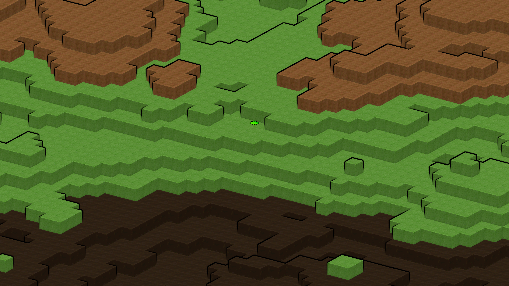
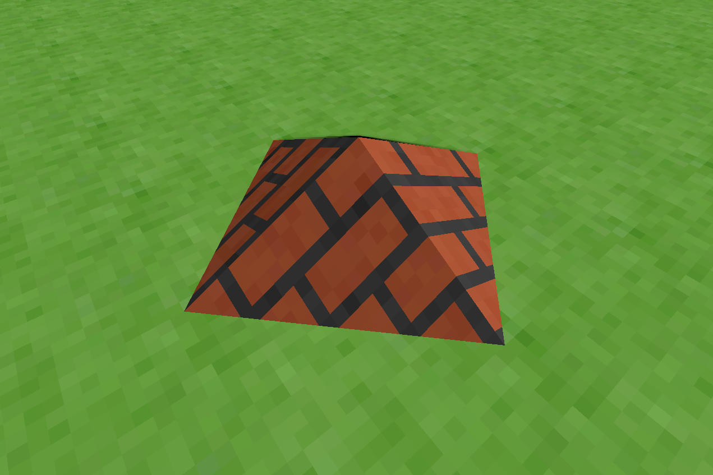

Ben Phillips - Official Website
| Home | About Me | My Projects | Demos | Game Devblog | Music Stuff |
|---|
Game Devblog
Project Name + Showcase Video
September 2025
The project is getting an official name! I'm naming it Fizzy engine, to indicate the important role of physics systems that make the engine unique. To celebrate the naming, I have created a brief video to showcase the collision system. Videos are the best way to show the physics systems that I want to implement, so this will be the first video in a series as I introduce new features.
The project roadmap for the near future includes porting the app to WGPU using the infrastructure from wgpu-sandbox to allow it to run in-browser and improve the graphics system overall. I also want to extend the physics system to include sphere collision, which will open up the possibilities for modeling physics objects far beyond the current axis-aligned bounding box model.
Introduction Post
June 2025
I'm working on a game engine to use in future indie games that I want to develop in my free time. I want this page to be a blog of sorts where I can talk about my progress and any interesting designs or ideas I implement into the engine. It's written in Rust and OpenGL, and only depends on the bare minimum set of basic crates to create a cross-platform application, since I prefer to design more of the architecture myself.
I started development in the summer of 2024. The core idea in the engine is that it's a voxel engine, but allows voxels to include a sloped face in any direction. A robust physics system allows physics objects to interact with these slopes just as reliably as aligned voxel edges, which addresses common physics problems that most game engines face while also providing unique level design opportunities.
Here is a very early screenshot of the engine, showing simple noise terrain with a voxel mesh in an isometric view.
And this capture shows a small pyramid made of sloped tiles in perspective projection.
Development is early and inconsistent so I can't predict how often updates will happen. The engine does not have a proper name yet either, but I'm brainstorming some options. Finally, I'm choosing to keep the repo private in case I want to eventually sell a game that uses the code.